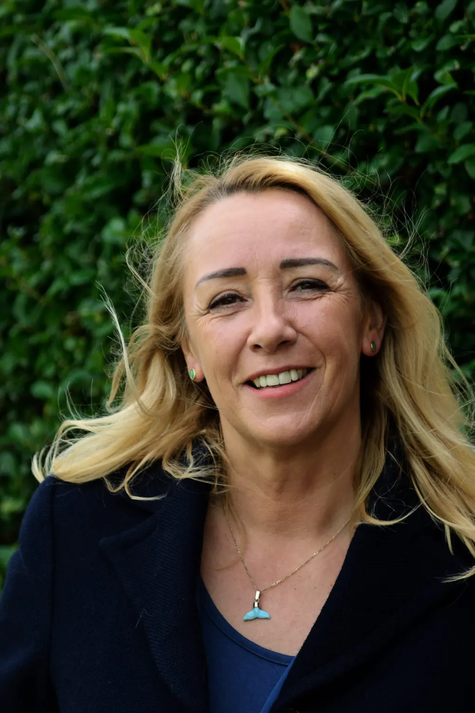

Linda Vos
Oprichtster en eigenaresse van Reconnect & Balance
Al op jonge leeftijd had Linda bijzondere paranormale ervaringen die haar nieuwsgierigheid wekten naar alles wat verder gaat dan de zichtbare wereld. Wat begon als een persoonlijke zoektocht naar antwoorden, groeide uit tot een levenslange passie voor bewustzijn en persoonlijke ontwikkeling.
Rond haar twintigste begon zij zich hier steeds verder in te verdiepen.
Zij volgde haar eerste opleiding in energetisch werk bij SHY (Spiritual Human Yoga), onder leiding van Mr. Dang. Het voelde als thuiskomen. Alsof er iets op zijn plek viel wat ze diep vanbinnen altijd al had gevoeld.
Vanaf dat moment bleef Linda haar kennis en ervaring uitbreiden. Ze volgde verschillende opleidingen en cursussen, waaronder Neuro Emotionele Integratie (NEI), Transformational Breath van Judith Kravitz en trainingen bij Drunvalo Melchizedek, Eric Pearl en Munay Ki.
Elke opleiding bracht haar nieuwe inzichten, maar misschien nog wel belangrijker: een steeds dieper begrip van zichzelf, van anderen en van de bijzondere wisselwerking tussen lichaam en geest.
Naast haar liefde voor bewustzijn en persoonlijke groei heeft Linda altijd een avontuurlijke en ondernemende kant gehad. Reizen, nieuwe ervaringen opdoen en andere manieren van leven ontdekken geven haar energie en inspiratie.
In 2005 verhuisde zij met haar gezin naar Spanje. Twaalf jaar lang genoot ze van het leven onder de Spaanse zon. Ook daar bleef haar nieuwsgierigheid haar verder brengen. Ze verdiepte zich in orthomoleculaire suppletie, verschillende massagetechnieken, meditatie en bewustzijnsontwikkeling, onder andere via Hemi-Sync van het Monroe Institute.
In 2017 keerde Linda samen met haar dochters terug naar Nederland. Een nieuwe fase in haar leven diende zich aan. Niet alles hoeft van tevoren uitgestippeld te zijn, want zoals Linda zelf zo mooi zegt:
“De weg vindt mij.”
Met haar opleiding tot Vitalfeld-therapeute breidde zij haar kennis en ervaring verder uit. Binnen haar praktijk Reconnect & Balance brengt zij haar holistische visie en jarenlange ervaring samen. Daarbij maakt zij onder andere gebruik van de holistische bodyscan en biofotonentherapie.
Haar opleiding in QM Hypnose vormt een mooie aanvulling op haar werk. Hiermee kan zij mensen ook op een dieper niveau begeleiden bij persoonlijke levensvragen, emotionele blokkades, oude patronen en ervaringen die nog altijd invloed kunnen hebben op hun dagelijks leven.
De mens achter het verhaal
Wat Linda het mooiste vindt aan haar werk, is de mens achter het verhaal.
Ze weet dat iedereen zijn eigen weg bewandelt, met mooie momenten, uitdagingen en ervaringen die ons vormen tot wie we zijn. Daarom vindt zij het belangrijk dat mensen zich bij haar op hun gemak voelen, zichzelf kunnen zijn en zich gehoord en gezien voelen.
Zonder oordeel, zonder haast en met oprechte aandacht.
Voor Linda gaat haar werk verder dan het toepassen van technieken of het delen van kennis. Het gaat haar vooral om het begeleiden van mensen op hun eigen weg naar meer bewustwording, rust, balans en verbinding met zichzelf.
